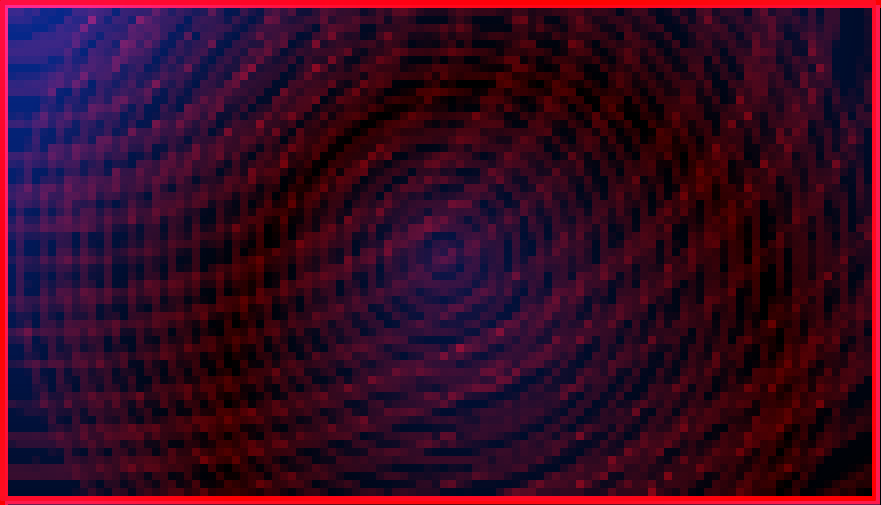
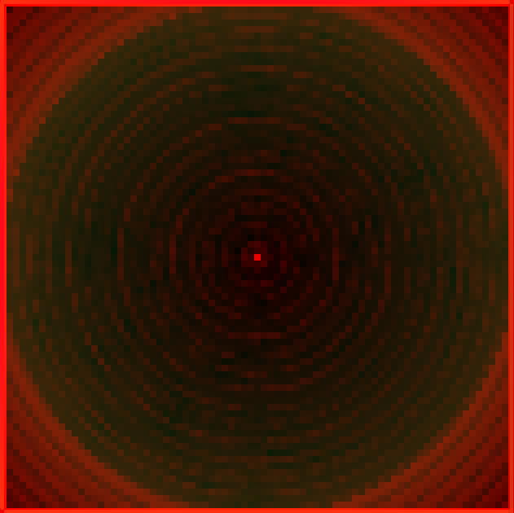

radial-gradient — 33.33% all categories ↑
FAIL 40.97% radial-gradient-ellipse-corner · ellipse-at-top-left · REAL

Elliptical radial-gradient positioned at the top-left corner; ironpress only paints centered circles so shape/position are not honored.
FAIL 16.32% radial-gradient-sized-px · explicit-pixel-size · REAL
Radial-gradient with an explicit 60px circle radius over a solid base; ironpress ignores explicit size/extent so the radius will not match Chrome.
PASS 0.30% radial-gradient-circle-center · circle-at-center


Centered circular two-stop radial-gradient (the shape ironpress natively supports).